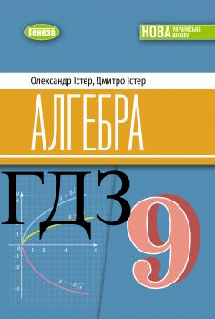
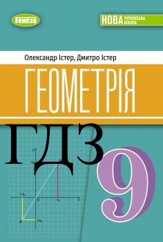
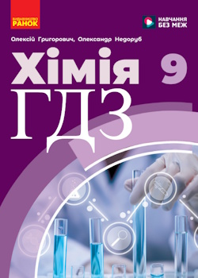
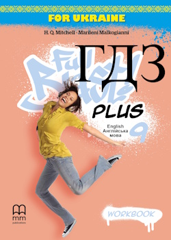
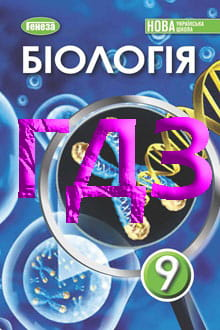
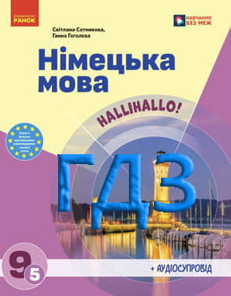
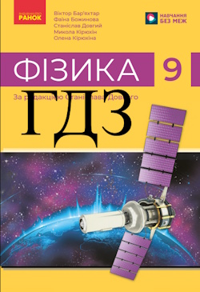

Алгебра 9 клас
ГДЗ до підручника Алгебра 9 клас Істер 2026 (НУШ). Посібник допоможе впоратися зі складними вправами та розібратися з алгоритмами розв'язання.
Перейти за посиланням
Геометрія 9 клас
ГДЗ до підручника Геометрія 9 клас Істер 2026 (НУШ). Відповіді на самостійні та контрольні роботи, малюнки та детальні пояснення.
Перейти за посиланням
Українська мова 9 клас
ГДЗ українська мова 9 клас Заболотний 2026 НУШ. Відповіді на складні питання та підготовка до тематичного оцінювання.
Перейти за посиланням
Хімія 9 клас
ГДЗ до підручника Хімія 9 клас Григорович — це сучасний помічник, що містить детальні відповіді до всіх практичних робіт, домашніх експериментів, лабораторних дослідів та вправ з підручника. Він допомагає швидко перевірити знання, розібратися зі складними хімічними рівняннями та покращити оцінки без зайвого стресу.
Перейти за посиланнямАнглійська мова 9 клас підручник
ГДЗ до підручника «Англійська мова» 9 клас Full Blast Plus 9 (Student's Book) авторів Г. К. Мітчелл, Марілені Маклоґіанні допоможуть швидко перевірити виконання домашніх завдань і краще засвоїти навчальний матеріал. Розв'язник містить відповіді до всіх модулів підручника, вправ на читання, граматику, лексику, письмо та підсумкових завдань, повністю відповідаючи структурі видання НУШ 2026 року.
Перейти за посиланням
Англійська мова 9 клас Зошит
ГДЗ до робочого зошита Англійська мова 9 клас Мітчелл 2026 НУШ (Workbook) містять правильні відповіді до всіх вправ зошита. Розв'язник допоможе перевірити домашню роботу, закріпити граматику й лексику, а також краще підготуватися до уроків англійської мови за програмою НУШ 2026 року.
Перейти за посиланнямЗарубіжна література 9 клас
ГДЗ до підручника Зарубіжна література 9 клас Ніколенко 2026 допоможуть учням перевірити правильність виконання домашніх завдань, краще зрозуміти художні твори та підготуватися до уроків. Розв'язник містить відповіді до всіх запитань і завдань підручника та відповідає програмі НУШ.
Перейти за посиланням
Біологія 9 клас
ГДЗ до підручника Біологія 9 клас Балан 2026 (НУШ). Посібник містить відповіді до параграфів, лабораторних досліджень та практичних робіт для швидкої перевірки знань.
Перейти за посиланням
Німецька мова 9 клас
ГДЗ до підручника Німецька мова 9 клас Сотникова (5-й рік навчання) 2026 НУШ. Готові розв'язання лексичних та граматичних вправ для успішного виконання домашніх завдань.
Перейти за посиланням
Фізика 9 клас
ГДЗ з фізики 9 клас Бар'яхтар (2026) НУШ. Розбір алгоритмів розв'язання задач та якісна підготовка до контрольних робіт.
Перейти за посиланням